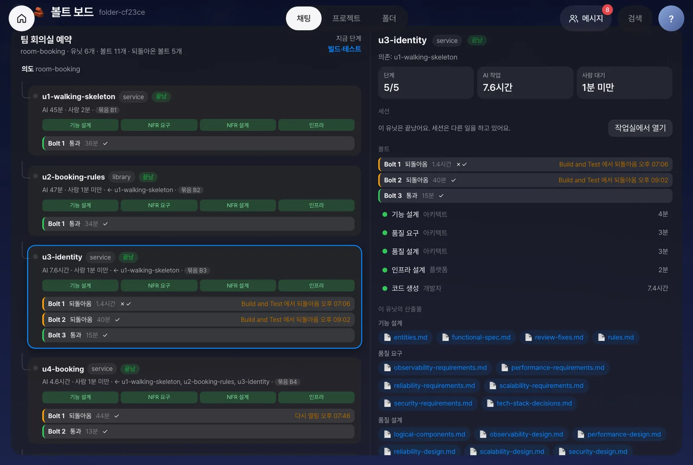

유닛 하나는 볼트 한 번에 끝나기도 하고, 시험 단계에서 되돌아와 볼트를 여러 번 거치기도 합니다. 이 장에서는 AI-DLC 원문이 정의한 볼트와 AI-DLC 2.11.2의 볼트 계획이 어떻게 다른지 살펴봅니다. 또한 그 차이를 반영해 의도 → 유닛 → 볼트로 펼친 볼트 보드와 홈 대시보드에서 진척을 확인하는 방법을 다룹니다.
원문의 볼트: 유닛을 만드는 한 번의 반복#
AI-DLC 원문(Raja SP, 2025)은 세 단위를 이렇게 정의합니다.
| 단위 | 원문의 정의 | 크기 |
|---|---|---|
| 의도(Intent) | 이루려는 업무 목표 | 하나의 요청 |
| 유닛(Unit) | 의도에서 나온, 독립적으로 만들고 검증할 수 있는 작업 단위 | 의도 하나에 여러 개 |
| 볼트(Bolt) | 유닛을 빠르게 구현하는 가장 작은 반복 주기. 스프린트와 비슷하지만 몇 시간~며칠 | 유닛 하나는 볼트 하나 이상으로 만들어집니다 |
따라서 계층은 의도 → 유닛 → 볼트입니다. 한 유닛의 코드를 만들고 검증해 통과하면 볼트 하나로 끝납니다. 통과하지 못해 다시 만들면 같은 유닛 아래에 볼트가 하나 더 생깁니다.
AI-DLC 2.11.2에서 「볼트」라는 말이 가리키는 세 가지#
설치본에서는 같은 말이 세 곳에 쓰입니다. 3장에서 본 두 가지에 하나가 더 있습니다.
| 이름 | 어디에 | 무엇 |
|---|---|---|
| 볼트 계획 | bolt-plan.md (2.9 볼트 계획 단계) |
사람이 읽을 수 있도록 유닛을 전달 순서에 따라 묶은 계획입니다. 레벨 2에서는 유닛마다 하나씩 B1~B5로 묶었습니다 |
| 실행 묶음 | bolt_dag.batches |
엔진이 유닛 의존 그래프에서 계산한, 동시에 만들 수 있는 유닛의 묶음입니다 |
| 볼트 체크포인트 | aidlc engine bolt checkpoint --unit <유닛> --kind unit |
유닛의 코드 생성 한 번을 마무리하는 검증입니다. 감사 기록에 CHECKPOINT_VERIFICATION_RECORDED로 남습니다 |
원문의 볼트에 해당하는 것은 세 번째입니다. 유닛의 코드 생성을 한 번 실행하고 체크포인트로 마무리하면 볼트 하나입니다. 빌드·테스트 단계에서 그 유닛을 되돌리면(GATE_REJECTED, 「Moved From build-and-test」) 같은 유닛의 코드 생성이 다시 시작되며, 이 과정이 다음 볼트가 됩니다. 볼트 계획 문서의 묶음은 유닛에 붙은 이름표로 보면 됩니다.
볼트 보드로 보기#
Process GPT Lite의 볼트 보드는 감사 기록을 읽어 이 계층을 그대로 펼칩니다.
- 폴더 화면의 AI-DLC 앱 단추에서 볼트 보드를 엽니다. 맨 위에 의도가 있고, 그 아래에 유닛 카드가 의존 순서대로 놓입니다. 머리글에는 「유닛 N개 · 볼트 M개 · 되돌아온 볼트 K개」가 보입니다.
- 유닛 카드에는 설계 단계 네 개(기능 설계 → NFR 요구 → NFR 설계 → 인프라 설계)가 한 줄로 표시되고, 그 아래에 볼트가 한 줄씩 붙습니다. 볼트 줄에는 걸린 시간, 체크포인트 결과(✓✗), 그리고 그 볼트가 어떻게 끝났는지(검증 통과, 되돌아옴 등)가 보입니다. 볼트 계획의 묶음은 「묶음 B1」 같은 작은 이름표로 붙습니다.
- 되돌아온 볼트에는 언제, 어느 단계에서, 어떤 의견으로 되돌아왔는지가 적혀 있습니다.
- 유닛을 누르면 오른쪽에 그 유닛의 단계별 진척, AI 작업과 사람 대기 시간, 볼트 목록, 산출물이 나옵니다. 해당 유닛을 구현 중이면 세션 화면이 3초마다 갱신되고, 작업실에서 열기로 쉘을 열어 개입할 수 있습니다.

위 그림은 classic을 실제로 한 번 실행해 팀 회의실 예약 앱을 만든 기록입니다. 유닛 6개를 볼트 11개로 만들었고, 그중 5개는 코드 생성 단계로 되돌아갔습니다. 로그인·가입을 담당하는 유닛(u3)은 빌드·테스트에서 성능 목표(로그인·가입 p95)를 넘겨 두 번 되돌아왔기 때문에 볼트가 세 개입니다. 볼트 계획에서는 유닛마다 하나씩 6개였지만, 실제 반복은 11번이었습니다. 이 보드에서 계획과 실제의 차이를 확인할 수 있습니다.
장 머리의 영상은 비품 대여 앱을 만든 다른 실행을 보여 줍니다. 유닛 5개를 볼트 6개로 만들었고, 웹 앱 유닛(u5)은 빌드·테스트에서 한 번 되돌아와 볼트가 두 개입니다.
홈 대시보드: 단계·사람 대기·품질#
볼트 보드가 유닛과 볼트를 보여 준다면, 홈 대시보드는 의도 전체를 한눈에 보여 줍니다. 폴더에 AI-DLC 기록이 있으면 홈에 대시보드 추가로 패널 여섯 개를 홈에 배치할 수 있습니다.
| 패널 | 보여 주는 것 |
|---|---|
| 작업 현황 | 현재 단계, 단계 레일, 승인·반려·열린 질문 수 |
| 사람 대기 | 단계마다 AI 작업 시간과 사람이 답하거나 승인하기까지 기다린 시간 |
| 볼트 | 유닛과 볼트의 진척 |
| 품질 | 검토 지적, 체크포인트 결과, 빌드·테스트 판정 |
| 감사 타임라인 | 감사 기록의 사건을 시간순으로 |
| 질문함 | 아직 답하지 않은 질문 |
AI 작업은 단계를 시작한 때(또는 수정 요청 뒤 다시 시작한 때)부터 승인 대기에 들어갈 때까지의 시간입니다. 다만 AI-DLC가 질문을 남기고 답을 기다린 시간은 뺍니다. 사람 대기는 질문의 답을 기다린 시간에 승인을 기다린 시간을 더한 값입니다. 4장에서 말한 「검증과 승인이 병목」인지를 숫자로 확인할 수 있습니다.
아래 영상은 이 핸즈온의 레벨 2 실습 저장소(음성 주차 앱)를 그대로 연결해 대시보드를 보는 장면입니다.
다른 도구에서도 같은 보드#
볼트 보드와 검토 보드는 MCP Apps 규격으로 만든 앱입니다. 앱 하나가 MCP 서버 하나이고, 화면은 해당 서버가 제공하는 HTML 한 장입니다. Lite에서는 폴더 화면의 단추로 열고, 같은 앱 서버를 MCP Apps를 지원하는 다른 호스트에 연결할 수도 있습니다. 자세한 내용은 Process GPT Lite 튜토리얼 31장의 「앱으로 붙이기」에 있습니다.
확인 문제#
볼트 계획(`bolt-plan.md`)에는 볼트가 5개인데, 볼트 보드에는 볼트가 8개 보입니다. 무엇이 다른가요?
볼트 계획은 유닛을 전달 순서로 묶은 계획이고, 볼트 보드의 볼트는 유닛의 코드 생성을 실제로 반복한 횟수입니다. 빌드·테스트에서 되돌아온 유닛이 있으면 그 유닛 아래에 볼트가 더 생기므로 계획보다 많아집니다.
유닛 하나에 볼트가 세 개 있습니다. 이 유닛에서 무슨 일이 있었나요?
처음 만든 뒤 두 번 되돌아와 코드 생성을 세 번 했습니다. 볼트 줄마다 언제, 어느 단계에서, 어떤 의견으로 되돌아왔는지가 적혀 있습니다. 같은 이유가 반복됐다면 설계나 목표를 다시 살펴봐야 한다는 신호입니다.